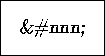
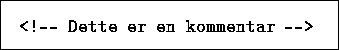

På grunn av spesialbetydningen til en rekke tegn, må det spesielle mekanismer til når disse skal brukes som en del av løpende tekst. I HTML er det to måter å gjøre dette på, enten vha. såkalte SGML entities eller vha. numeriske tegnkoder.
Ethvert tegn i ISO8859-1 kan angis vha. en sk. SGML entity. F.eks. må ampersand tegnet '&' og større-enn '>' og mindre-enn '<' tegnet angis spesielt siden disse tegnene ellers vil tolkes av HTML parseren.
Tabell 1 viser en liste over nyttige SGML entities, en komplett liste er dessuten tilgjengelig online.

Alternativt kan man benytte en notasjon der man bruker den numeriske koden for et tegn i Latin-1 alfabetet. Dette gjøres vha. notasjonen

der 'nnn' er et tall mellom 32 og 255 (men en del posisjoner i fontvektorene er ikke koplet til et tegn).